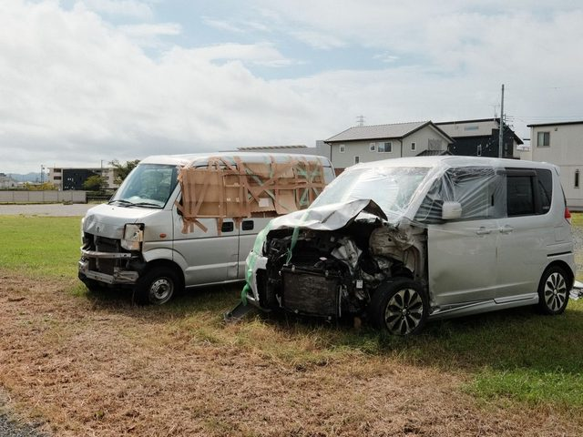
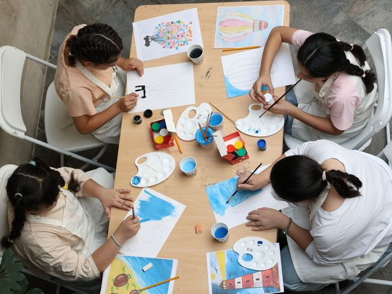
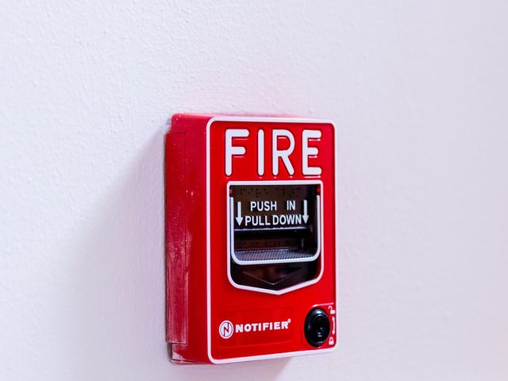
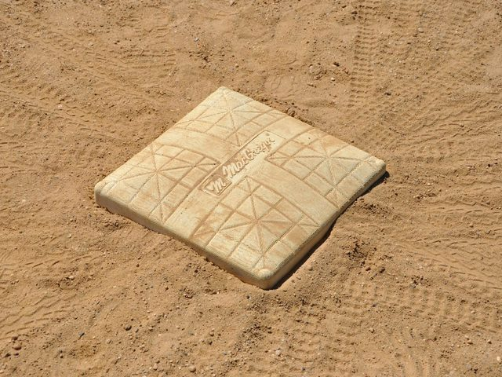
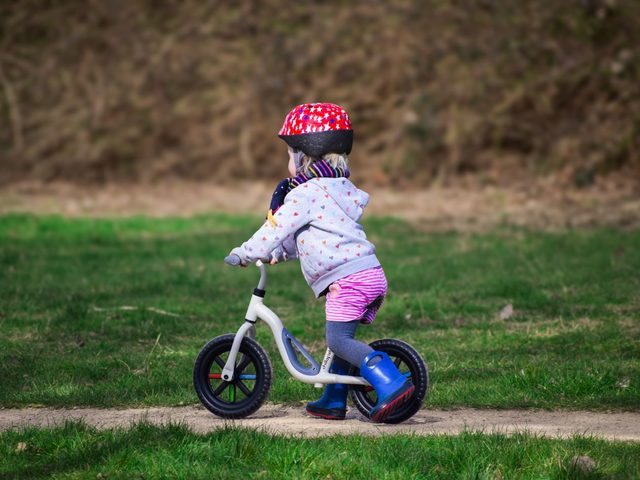
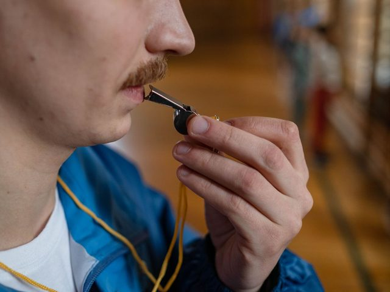

UNIT 34 · VOCABULARY
其他名詞（1）
Other nouns (1)
40 個單字聽・唸・用
本單元單字一覽
其他名詞第一部分，accident 到 danger，共 40 個。很多是不可數名詞（advice、anger、attention、blood、courage），不能加 a 或 -s。
accidentactivityadvertisementadviceaimalarmalbumangerarmyAsianattentionballoonbasebeautybeginnerbeginningbloodbombbranchbundlecablecagecaptaincausecenturychannelcharacterchartchildhoodcoachcommandcongratulationcontractcouragecourtcrimecrowdcurvedamagedanger
每個字都有 🔊，先聽發音、跟著唸，再看例句。
單字 1–4

accident
意外；事故n.
Three people were hurt in the car accident.
有三個人在車禍中受傷。
有三個人在車禍中受傷。

activity
活動n.
Our school has many after-school activities.
我們學校有很多課後活動。
我們學校有很多課後活動。
advertisement
廣告n.
I saw an advertisement for a new phone on TV.
我在電視上看到新手機的廣告。
我在電視上看到新手機的廣告。
💡
advice
忠告；建議n.
Can you give me some advice about learning English?
你可以給我一些學英文的建議嗎？
你可以給我一些學英文的建議嗎？
單字 5–8
🎯
aim
目標；瞄準n. / v.
My aim is to read 50 books this year.
我的目標是今年讀五十本書。
我的目標是今年讀五十本書。

alarm
警報；警鈴；鬧鐘n.
The fire alarm rang, and everyone left the building.
火災警報響了，大家都離開大樓。
火災警報響了，大家都離開大樓。

album
相簿；專輯n.
Grandma showed me her old photo album.
奶奶給我看她的舊相簿。
奶奶給我看她的舊相簿。
😡
anger
憤怒；怒氣n.
He tried to hide his anger.
他試著隱藏他的怒氣。
他試著隱藏他的怒氣。
單字 9–12

army
軍隊；陸軍n.
My uncle served in the army for two years.
我叔叔在軍中服役兩年。
我叔叔在軍中服役兩年。
🍚
Asian
亞洲人；亞洲的n. / adj.
Rice is an important food in many Asian countries.
米在許多亞洲國家是重要的食物。
米在許多亞洲國家是重要的食物。
👂
attention
注意；專心n.
Please pay attention to the teacher.
請注意聽老師說。
請注意聽老師說。

balloon
氣球n.
The little boy let go of his red balloon.
小男孩放掉了他的紅氣球。
小男孩放掉了他的紅氣球。
單字 13–16

base
底部；基礎；（棒球）壘n.
The runner reached second base.
跑者上了二壘。
跑者上了二壘。
beauty
美；美女n.
We enjoyed the beauty of the mountains.
我們欣賞山的美景。
我們欣賞山的美景。

beginner
初學者n.
This class is for beginners.
這堂課是給初學者的。
這堂課是給初學者的。
🏁
beginning
開始；開端n.
The story is boring at the beginning.
這個故事開頭很無聊。
這個故事開頭很無聊。
單字 17–20

blood
血；血液n.
The nurse took some blood from my arm.
護士從我手臂抽了一些血。
護士從我手臂抽了一些血。
💣
bomb
炸彈；轟炸n. / v.
The police found a bomb in the old building.
警察在那棟舊大樓裡發現一顆炸彈。
警察在那棟舊大樓裡發現一顆炸彈。

branch
樹枝；分店n.
A bird is sitting on the branch.
一隻鳥停在樹枝上。
一隻鳥停在樹枝上。

bundle
捆；束n.
He carried a bundle of newspapers.
他搬著一捆報紙。
他搬著一捆報紙。
單字 21–24

cable
電纜；纜線n.
We took a cable car up the mountain.
我們搭纜車上山。
我們搭纜車上山。

cage
籠子n.
The bird is singing in its cage.
那隻鳥在籠子裡唱歌。
那隻鳥在籠子裡唱歌。
captain
隊長；船長；機長n.
Tom is the captain of our basketball team.
Tom 是我們籃球隊的隊長。
Tom 是我們籃球隊的隊長。
❓
cause
原因；造成n. / v.
Nobody knows the cause of the fire.
沒人知道火災的原因。
沒人知道火災的原因。
單字 25–28
🏛️
century
世紀；一百年n.
This temple was built a century ago.
這座廟是一百年前蓋的。
這座廟是一百年前蓋的。

channel
頻道；海峽n.
What channel is the baseball game on?
棒球賽在第幾台？
棒球賽在第幾台？
🐭
character
角色；個性；字n.
Mickey Mouse is a famous cartoon character.
米老鼠是有名的卡通角色。
米老鼠是有名的卡通角色。

chart
圖表n.
The chart shows how tall each student is.
這張圖表顯示每個學生的身高。
這張圖表顯示每個學生的身高。
單字 29–32

childhood
童年n.
I had a happy childhood in the countryside.
我在鄉下度過快樂的童年。
我在鄉下度過快樂的童年。

coach
教練n.
Our coach makes us run ten laps every day.
我們的教練每天叫我們跑十圈。
我們的教練每天叫我們跑十圈。
🫡
command
命令；指揮n. / v.
The soldiers waited for the captain's command.
士兵們等待隊長的命令。
士兵們等待隊長的命令。
🎉
congratulation
恭喜；祝賀n.
Congratulations on winning first prize!
恭喜你得到第一名！
恭喜你得到第一名！
單字 33–36

contract
合約；契約n.
The player signed a three-year contract.
那位球員簽了三年的合約。
那位球員簽了三年的合約。
🦁
courage
勇氣n.
It takes courage to say sorry.
說對不起需要勇氣。
說對不起需要勇氣。

court
法院；球場n.
We played tennis on the school court.
我們在學校的球場打網球。
我們在學校的球場打網球。
🚔
crime
罪；犯罪n.
Stealing is a crime.
偷竊是一種犯罪。
偷竊是一種犯罪。
單字 37–40
crowd
人群；群眾；擠滿n. / v.
A big crowd waited outside the concert hall.
一大群人在音樂廳外面等。
一大群人在音樂廳外面等。

curve
曲線；彎道n.
Drive slowly around the curve.
彎道要慢慢開。
彎道要慢慢開。
damage
損害；破壞n. / v.
The typhoon caused a lot of damage.
颱風造成很大的損害。
颱風造成很大的損害。

danger
危險n.
The sign says "Danger! Keep out!"
告示寫著「危險！請勿進入！」
告示寫著「危險！請勿進入！」
不可數名詞
| 字 | 怎麼數 |
|---|---|
| advice | a piece of advice |
| anger／courage | 不能數 |
| attention | pay attention to… |
| blood | some blood |
| damage | a lot of damage |
不可數名詞前面不加 a，後面不加 -s；可以用 some、a lot of、much。
名詞和形容詞
| 名詞 | 形容詞 |
|---|---|
| anger | angry |
| courage | courageous／brave |
| danger | dangerous |
| beauty | beautiful |
快問快答：中文 → 英文
1意外；事故accident
2廣告advertisement
3目標；瞄準aim
4相簿；專輯album
5軍隊；陸軍army
6注意；專心attention
7底部；基礎；（棒球）壘base
8初學者beginner
快問快答：英文 → 中文
1blood血；血液
2branch樹枝；分店
3cable電纜；纜線
4captain隊長；船長；機長
5century世紀；一百年
6character角色；個性；字
7childhood童年
8command命令；指揮
學完了！接下來
複習方法
review
- 回到「📗 單字卡」，按「遮中文」自己考自己
- 再按「遮英文」，看中文說出英文
- 每個例句跟著 🔊 唸一次
準備好了
- 按右上角「📝 前往測驗」
- 測驗錯的題目要訂正到全對
- 訂正完成補送 1 點